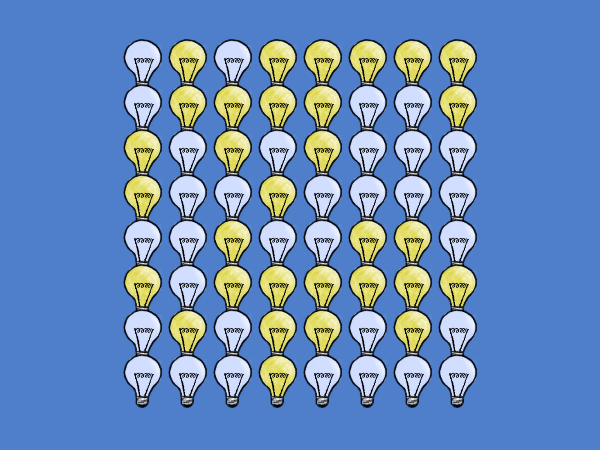

Pretty examples
Category: misc
The presentation of Grid Framework has been a sore spot in my eyes from day one. Primitive shapes are good enough when prototyping, but when you want to sell something you need to have that extra "bang", or else your product will look like something thrown together over a weekend.
This is why I have been spending time lately redoing the examples. If you click one one of the playable examples on the website you will now see actual sprites and textures instead of Unity's primitive shapes. The lights-out example now has sprites of light bulbs, the movement example has a retro tileset, the terrain mesh construction example has a repeating texture, and so on. What has been a huge help is that Unity 5 supports sprites out of the box. This has made supporting 2D images a breeze without having to rely on other packages or rolling my own like I had to in the past.

You won't be able to find these new examples in Grid Framework yet though, there is already an update awaiting approval and if I were to upload another release it would delay the pending one. That's also the reason why I haven't update the screenshots either, that would be dangerously close to false advertising at this point in time.
One final note, the examples are now running in Unity's WebGL player instead of the old Unity web player. That's a good thing because it doesn't require an extra browser plugin from the user, but it doesn't play well with Pelican (my static site generator). For now there is no loading progress bar because I would have to go through Unity's progress bar implementation, and there is not much documentation on that topic. Oh well, another time then, the examples are fortunately not large.